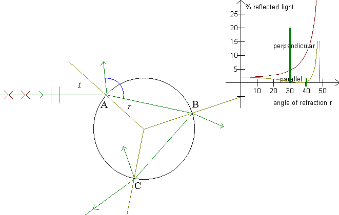
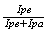

Examine Polarization first, to make this illustration easier to understand!
When a ray falls on a refracting surface, it is refracted and reflected. Furthermore, the light is polarized.

On the figure, the ray's movement for the primary rainbow is seen. At point A, part of the ray is reflected. This light is lost, only the refracted part of the ray passes on. At point B, the refracted part of the ray is lost, and at point C the reflected part is lost. Thrice does a part of the ray disappear on its way through the drop! How much light is then left in the rainbow?
Sunlight is not polarized. I.e., we can assume that the light consists of equal amounts of light with a parallel and with a perpendicular polarization. The program calculates the percentage of light remaining in the scattered ray for each type of polarization. We see that the light of the rainbow is polarized, and we see that the fraction of the light scattered in the drop to become rainbow light is minimal.
Exercise 15
Fill out a table like the following:
| color |
wave- length |
index
of refraction |
Brewster's angle |
limiting angle |
Exercise 16
Notice that, in the primary rainbow in particular, the angle of refraction is close to Brewster's angle
Estimate the degree of polarization,

, for each rainbow.
Exercise 17
Reexamine the »Colors of the rainbow«. We will now consider the light's polarization and the fact that the intensity of the scattered light depends on the angle of incidence.
Choose »The colors of the rainbow« in the Rainbow program. Here, F6 provides two graphs, the formerly considered and a corrected one. The corrected graph is naturally only a fraction of the uncorrected graph. F5 gives you a corrected sum of all graphs. This last graph is multiplied by 10.
Describe the corrected graphs. Both for angles below the primary rainbow, above the secondary rainbow, and the rainbows themselves.
Assume that a color in the primary rainbow can be seen for any angle which contains as much light as in the secondary rainbow.
At which angles would the primary rainbow then be seen?
Exercise 18
Could it be true that the rainbow can illuminate the area below it, like a mountain?
Hint: Consider the directions of the scattered rays and calculate on each occasion the percentage of light in each ray. (In particular, look at rays just near Brewster's angle.)